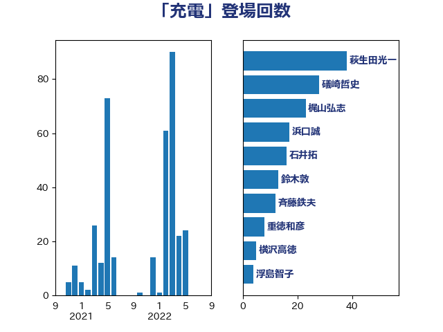

単語「充電」

| 萩生田光一 | 自由民主党 | 38 回 |
| 礒崎哲史 | 国民民主党 | 28 回 |
| 梶山弘志 | 自由民主党 | 23 回 |
| 浜口誠 | 国民民主党 | 17 回 |
| 石井拓 | 自由民主党 | 16 回 |
| 鈴木敦 | 国民民主党 | 13 回 |
| 斉藤鉄夫 | 公明党 | 12 回 |
| 重徳和彦 | 立憲民主党 | 8 回 |
| 横沢高徳 | 立憲民主党 | 5 回 |
| 浮島智子 | 公明党 | 4 回 |
| 熊谷裕人 | 立憲民主党 | 4 回 |
| 藤川政人 | 自由民主党 | 4 回 |
| 古川元久 | 国民民主党 | 3 回 |
| 岸田文雄 | 自由民主党 | 3 回 |
| 末松信介 | 自由民主党 | 3 回 |
| 大西英男 | 自由民主党 | 2 回 |
| 落合貴之 | 立憲民主党 | 2 回 |
| 須藤元気 | 無所属 | 2 回 |
| 上杉謙太郎 | 自由民主党 | 1 回 |
| 中川宏昌 | 公明党 | 1 回 |
| 井上信治 | 自由民主党 | 1 回 |
| 堀場幸子 | 日本維新の会 | 1 回 |
| 小野泰輔 | 日本維新の会 | 1 回 |
| 山口壯 | 自由民主党 | 1 回 |
| 山本剛正 | 日本維新の会 | 1 回 |
| 工藤彰三 | 自由民主党 | 1 回 |
| 平木大作 | 公明党 | 1 回 |
| 打越さく良 | 立憲民主党 | 1 回 |
| 東徹 | 日本維新の会 | 1 回 |
| 柿沢未途 | 無所属 | 1 回 |
| 根本幸典 | 自由民主党 | 1 回 |
| 森本真治 | 立憲民主党 | 1 回 |
| 森田俊和 | 立憲民主党 | 1 回 |
| 榛葉賀津也 | 国民民主党 | 1 回 |
| 漆間譲司 | 日本維新の会 | 1 回 |
| 石井正弘 | 自由民主党 | 1 回 |
| 石井章 | 日本維新の会 | 1 回 |
| 福島みずほ | 社会民主党 | 1 回 |
| 福島伸享 | 無所属 | 1 回 |
| 菅義偉 | 自由民主党 | 1 回 |
| 野田国義 | 立憲民主党 | 1 回 |
| 長谷川岳 | 自由民主党 | 1 回 |
| 阿部司 | 日本維新の会 | 1 回 |
| 青山繁晴 | 自由民主党 | 1 回 |